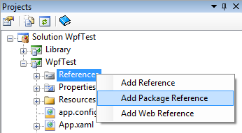
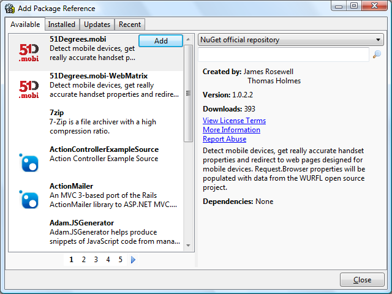
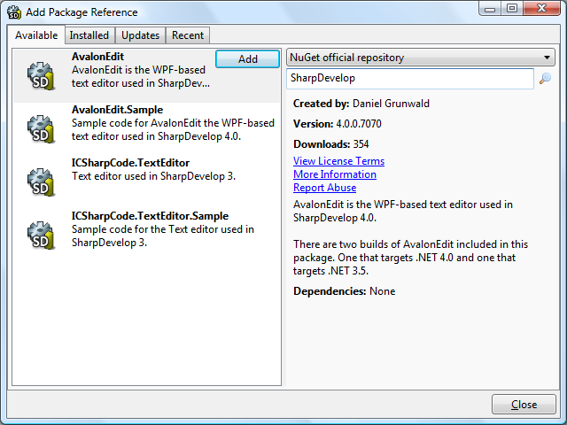
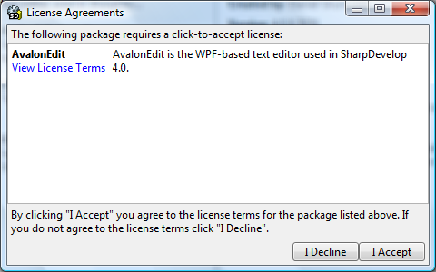
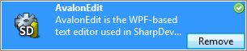
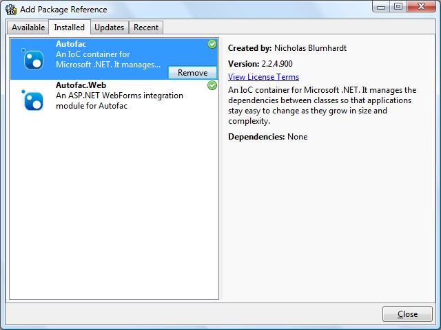
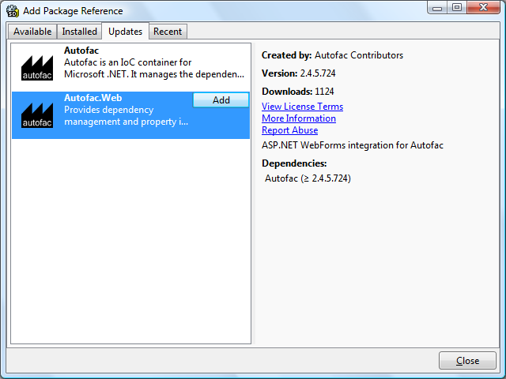
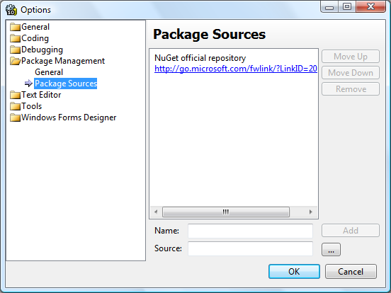
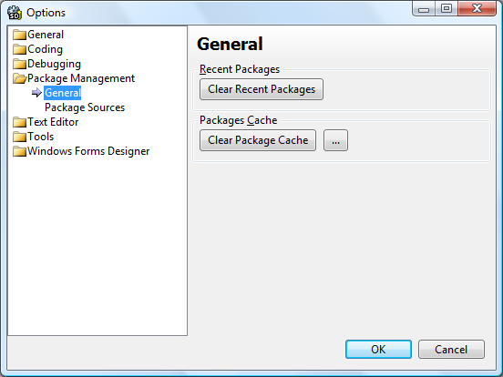

SharpDevelop 4.1 now includes support for NuGet. You can now add references to NuGet packages to your projects from SharpDevelop.
To add a NuGet package reference select your project in the Projects window, right click and select Add Package Reference.

The Add Package Reference dialog will then be displayed.

The dialog has four tabs at the top. The Installed tab shows all packages that have been installed for the current project. The Available tab shows all the packages available from the NuGet package repository. The Updates tab shows the packages that have newer versions available. The Recent tab shows packages that were recently installed.
Select the Available tab to show the packages that can be installed. Information on a package will be displayed on the right hand side when the package is selected.
To find a package you can either page through the packages by clicking the arrows and page numbers underneath or you can search for a package by name. To search for a package enter the name in the search text box at the top right and press return or click the search icon. The matching packages will then be displayed. To clear the search results remove the search text and run the search again.

To install a package, select it and click the Add button. If the package requires you to accept a license agreement a dialog will be displayed allowing you to accept or decline the agreement.

After that the package and any dependencies will be installed. Your project will be updated to include new assembly references and source code files from the package. The installed package will now have green tick icon next to it showing that is has been installed.

Click the Close button to close the Add Package Reference dialog.
To remove a NuGet package open the Add Package Reference dialog and select the Installed tab.

Select the package you want to remove and click the Remove button. The package will then be removed and your project will be updated.
To update a NuGet package open the Add Package Reference dialog and select the Updates tab.

Select the package you want to update and click the Add button. The package and its dependencies will then be updated.
By default the official NuGet repository will be used when searching for available packages. If you want to set up a different NuGet repository, such as one on your local file system, then select Options from the Tools menu. In the Options dialog select Package Management and then Package Sources.

Here you can add and remove NuGet repositories as required.
Under the General options you can clear the recent packages and the local package repository cache.

SharpDevelop has a PowerShell console that can be used to install NuGet packages with PowerShell scripts.
Further information on the PowerShell console can be found in the NuGet PowerShell Console post.